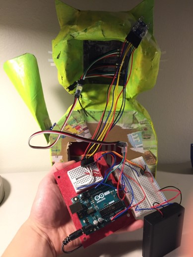
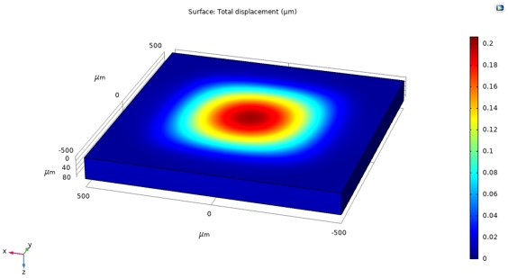
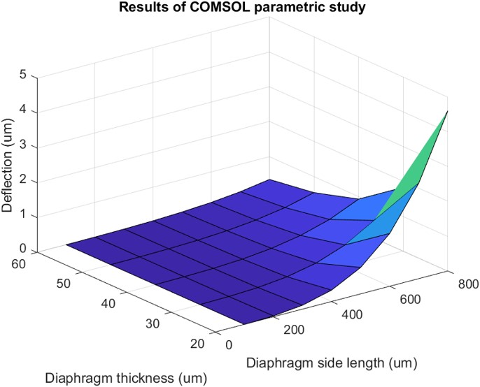

This is a collection of images of my mechanical engineering projects.
| Shear pin hub on driveshaft | Installed on car |
|---|---|
| |
I designed, machined, and installed this assembly which tests the maximum torque through a driveshaft by destruction of a shear pin. Below is a CAD model which shows a cross sectional view of a pin resting in its bore.

| CVT placed in custom tool | Side view of tool |
|---|---|
 |
 |
I designed and manufactured this tool which was intended to aid in assembly of a CVT pulley. The tool didn't quite work as planned, but the process of making it taught me valuable lessons in designing something to be sturdy, useful, and easy to make.
| CVT cam | Brake and steering brackets | Steering rack parts |
|---|---|---|
 |
 |
 |
I manufactured these parts, and others, on a Tormach PCNC 770.
| View of finished project | Internals |
|---|---|
 |
 |
I designed and built an interactive waving cat statue that responded to external input like patting on the head.
I wrote MATLAB code to identify particle boundaries on a surface created by laser powder bed fusion. This image shows the result of one segmentation method compared to a reference classification result.
I used ANSYS Workbench to conduct parametric studies to determine the effect of void number and size on the thermal resistance and maximum temperature in a die attach layer.
| COMSOL result | Plot of parametric study |
|---|---|
|  |  |
I designed a capacitive sensor from deformation equations, created a process flow and 3D model using L-Edit and MEMS Pro, and studied the effect of the geometry on deformation using COMSOL.